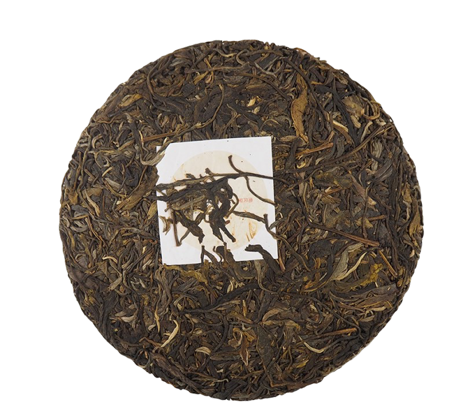

Первое упоминание о производстве чая в этом районе осталось на стелах монастыря деревни Ман Цзин (芒景) и относится к 696 году. То есть это 1300 лет назад. Согласно преданию народности Бу Лан (布朗) предок Ба Янь Лэн (叭岩冷) выращивал чай. И умирая, завещал своим потомкам чайные сады. «Оставляя вам золото и серебро знаю, что вы его потратите. Оставляя коров и лошадей знаю, что они переведутся. Оставляя же вам чай знаю, что вы никогда не будете нуждаться и вы всегда будете в достатке». Район реки Лань Цан Цзян считается «откуда есть пошёл юньнаньский чай», а предок народности Бу Лан первый стал использовать чай и выращивать его. Поэтому народность Бу Лан называется «народность древних чайных деревьев», а предка Ба Янь Лэна — называют «чайным предком». У правителя народности Дай Цзу (район Си Шуан Ба На) было 7 дочерей и седьмую самую прекрасную дочь он выдал за Ба Янь Лэна. Сейчас в деревне Ман Цзин есть «Кумирня Чайного Предка» и «Беседка прекрасной принцессы».
Заваривать горячей водой (80–90°С) в гайвани или чайнике из пористой глины для шэнов. Пропорция заварки к воде: 4 гр. на 100 мл. Пить проливом с постепенным увеличением экспозиции. Выдерживает 9 завариваний.
